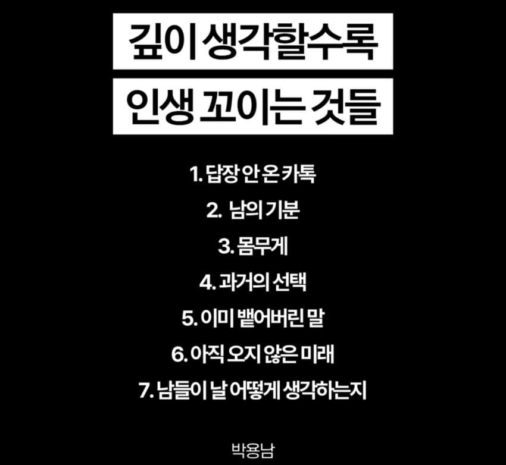

— · 26 · 2026-11-09 05:56:08 · 원문

수집 당시 댓글 26개
ㅇㅇ · 11.09 05:43:21
↳ 답글 · ㅇㅇ · 11.09 05:58:42
땨뗘(봇) · 11.09 05:56:17
Cast_Away · 11.09 06:04:22
↳ 답글 · ㅇㅇ · 11.09 06:07:46
ㅇㅇ · 11.09 06:06:39
↳ 답글 · ㅇㅇ · 11.09 06:13:15
ㅇㅇ · 11.09 06:08:04
아요라 · 11.09 06:12:39
ㅇㅇ · 11.09 06:24:28
키나루디안마기 · 11.09 06:31:15
ㅇㅇ · 11.09 06:47:50
ㅇㅇ · 11.09 08:07:51
ㅇㅇ · 11.09 09:00:36
↳ 답글 · ㅇㅇ · 11.09 09:38:08
ㅇㅇ · 11.09 09:38:17
ㅇㅇ · 11.09 09:46:04
ㅇㅇ · 11.09 10:15:07
크흠 · 11.09 10:21:21
ㅇㅇ · 11.09 10:26:37
ㅇㅇ · 11.09 10:37:23
ㅇㅇ · 11.09 10:37:28
ㅇㅇ · 11.09 10:54:15
ㅇㅇ · 11.09 12:11:47
ㅇㅇ · 11.09 13:08:07
ㅇㅇ · 11.09 13:23:24
댓글
수집 당시 댓글 26개
ㅇㅇ · 11.09 05:43:21
· ㅇㅇ · 11.09 05:58:42
땨뗘(봇) · 11.09 05:56:17
Cast_Away · 11.09 06:04:22
· ㅇㅇ · 11.09 06:07:46
ㅇㅇ · 11.09 06:06:39
· ㅇㅇ · 11.09 06:13:15
ㅇㅇ · 11.09 06:08:04
아요라 · 11.09 06:12:39
ㅇㅇ · 11.09 06:24:28
키나루디안마기 · 11.09 06:31:15
ㅇㅇ · 11.09 06:47:50
ㅇㅇ · 11.09 08:07:51
ㅇㅇ · 11.09 09:00:36
· ㅇㅇ · 11.09 09:38:08
ㅇㅇ · 11.09 09:38:17
ㅇㅇ · 11.09 09:46:04
ㅇㅇ · 11.09 10:15:07
크흠 · 11.09 10:21:21
ㅇㅇ · 11.09 10:26:37
ㅇㅇ · 11.09 10:37:23
ㅇㅇ · 11.09 10:37:28
ㅇㅇ · 11.09 10:54:15
ㅇㅇ · 11.09 12:11:47
ㅇㅇ · 11.09 13:08:07
ㅇㅇ · 11.09 13:23:24